这份说明带你从第一次打开到熟练使用，每一步都有图。随时可从顶栏 ? 或「关于觅影」再次打开。
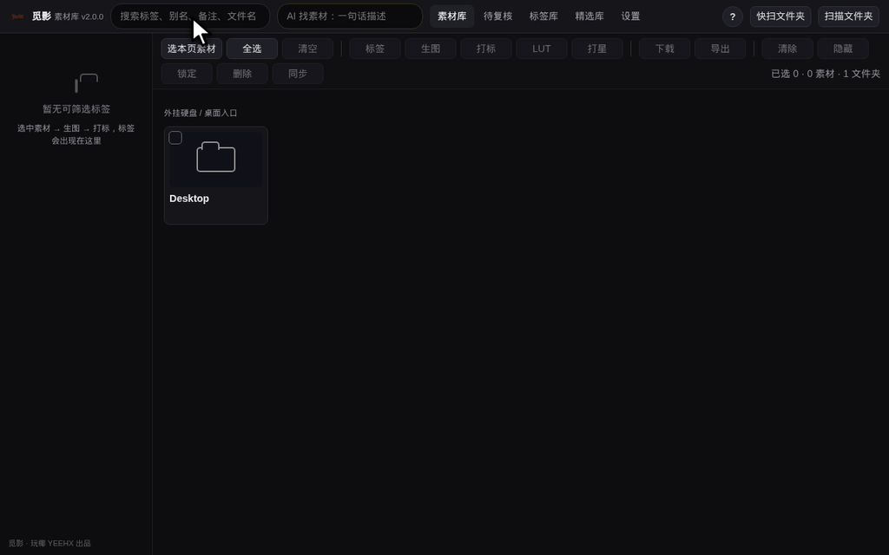
解压 zip → 进 app 文件夹 → mac 双击 启动觅影.command，Windows 双击 启动觅影.bat。第一次自动装依赖要等 1-5 分钟，之后秒开。关窗口 = 退出觅影；手动停用 停止觅影.command（Windows：停止觅影.bat）。
启动觅影.command →「打开」→ 再点「打开」。macOS 的正常拦截，只需这一次。Windows 弹 SmartScreen 蓝框？点「更多信息」→「仍要运行」。Windows 需要 Python ≥ 3.10（启动脚本会检查并引导安装，装时勾选 Add python.exe to PATH）。你只需准备：一台 Mac ＋ Python ≥ 3.10（没有会引导安装）。
脚本自动装：全部运行依赖 ＋ 独立窗口 / HEIC 两个可选件（装不上自动跳过），网络不畅自动切国内镜像。
按需自装：Ollama（本地免费 AI，见⑦）、REDCINE-X PRO（看 R3D，见⑩）、厂商还原 LUT（见⑩）。
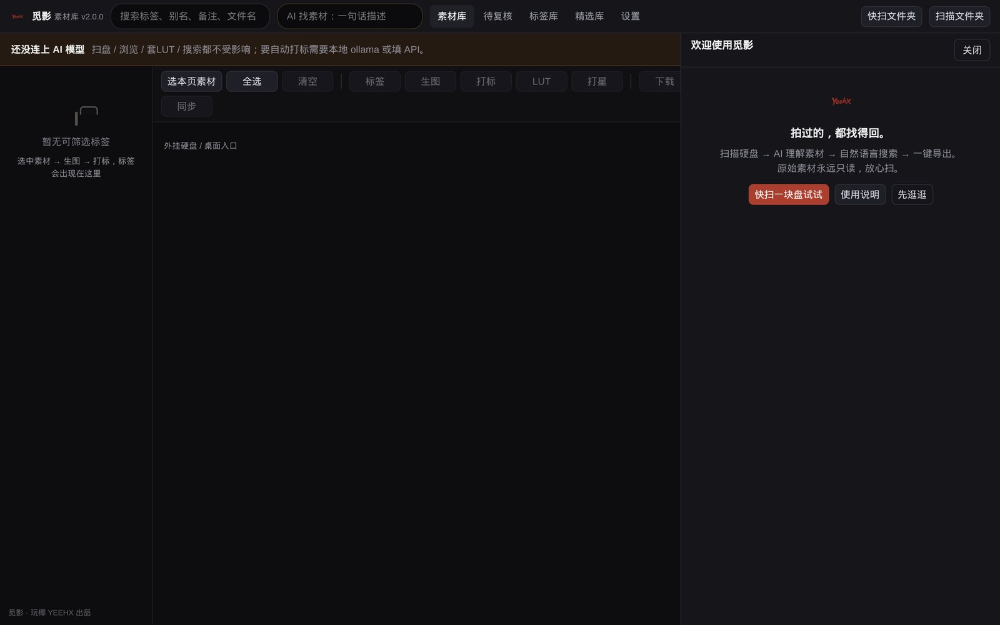
点右上角
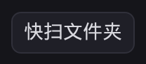
选一块硬盘或大文件夹：登记素材 → 生成缩略图 → 建立可搜索底稿。进度在右下角，期间可正常使用。app/out/。从首跑向导到建起第一个可搜索的库，30 秒看完：
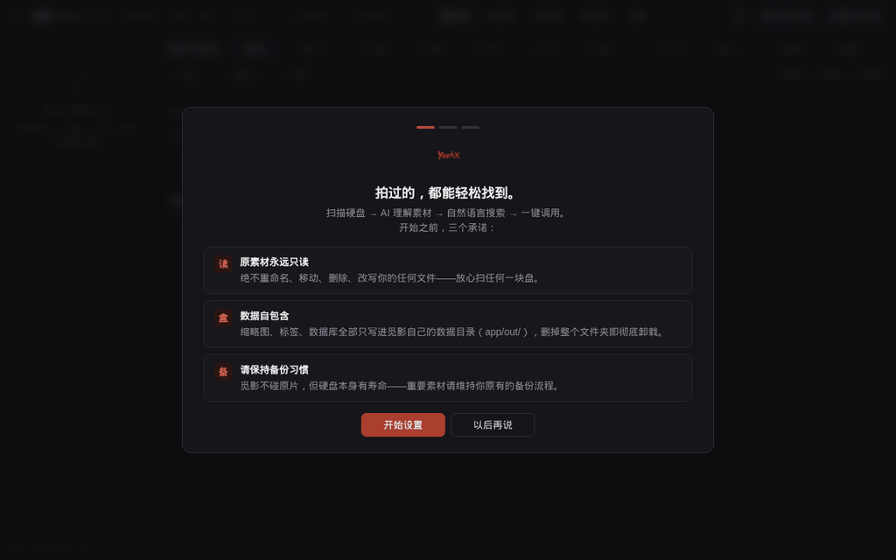
快扫 vs 扫描：快扫每夹只抽 2 张代表图快速建底稿；重点文件夹再「扫描文件夹」精扫——登记全部、补齐缩略图、逐一打标：
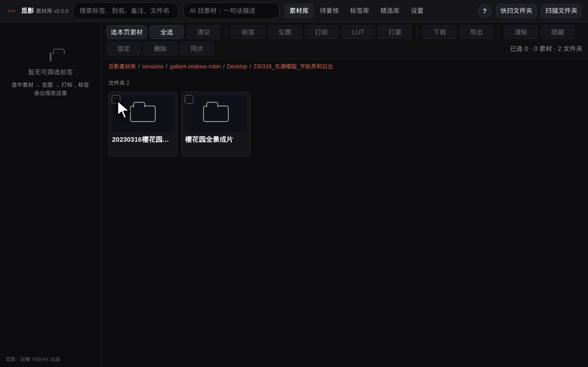
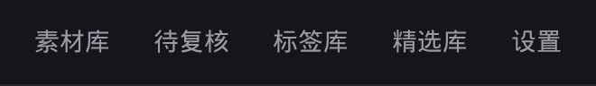
素材库 浏览和找 · 待复核 AI 提的新词等你确认 · 标签库 标签管理后台 · 精选库 打过星的好素材 · 设置 模型 / 类目 / LUT / 备份。
选中素材后用工具栏，每个按钮都有悬停说明：
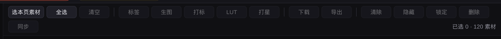
1. 直接搜：顶栏搜索框输关键词回车，标签 / 别名 / 备注 / 文件名 / AI 描述都能命中。地标、颜色、天气、氛围随意组合——剪一支《长江的颜色》？挨个搜「紫色 长江」「金色 长江」「粉色 长江」，拍到过就能找到。
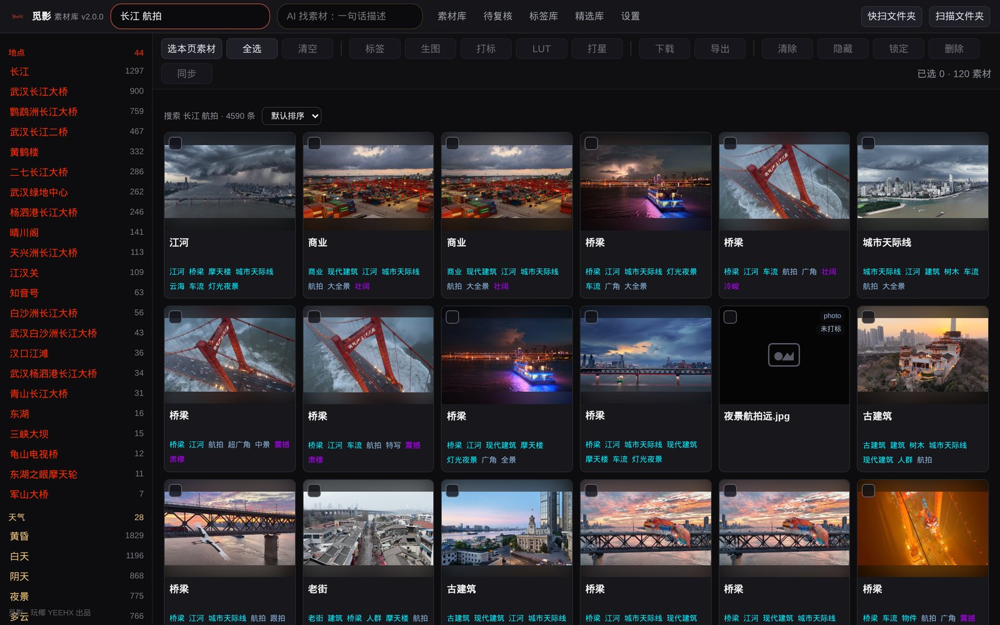
2. 左侧标签筛选：按类目点选、叠加收窄，搜不准时最可靠。
3. AI 找素材（金框）：一句话描述，可带范围和导出指令，如「在 02_视频 里找武当山雪景航拍空镜，导出到桌面武当山备选」。AI 先给你看结果和"AI 理解"，导出必须经你确认。调模型慢几秒正常，Esc 取消。
AI 只有两个权限：搜索（只读）和导出（复制）。它没有任何能动你原始素材的通道。
最基础的两个动作：点缩略图看大图，点卡片标题看详情——
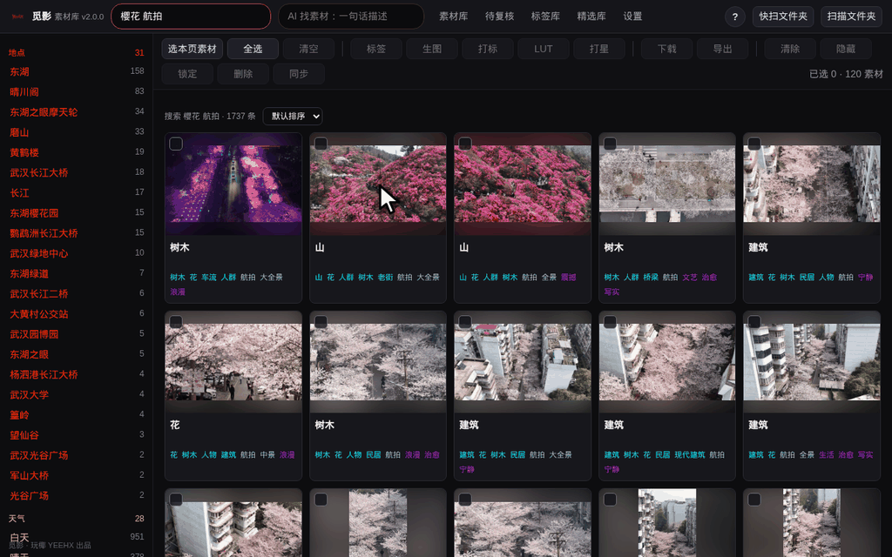
点缩略图 = 全屏大图：←→ 翻页 · 1-5 打星 · 0 取消 · Esc 关闭。点卡片标题 = 详情抽屉（备注 / 标签 / 在 Finder / 资源管理器中显示）。
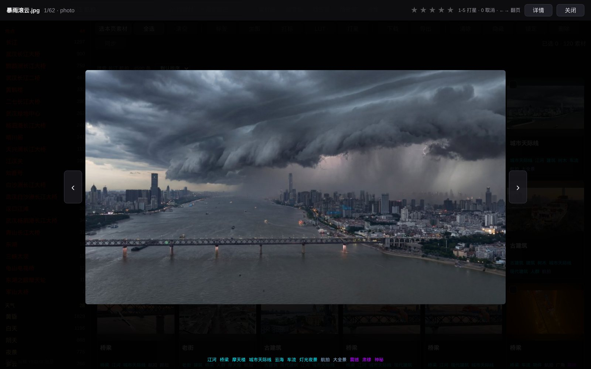
键盘流：方向键移动 · 空格选中 · 回车大图 · I 详情 · A 全选 · Shift+勾选范围多选。打过星的都进精选库。
勾选素材（卡片左上角 ✓），点
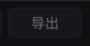
：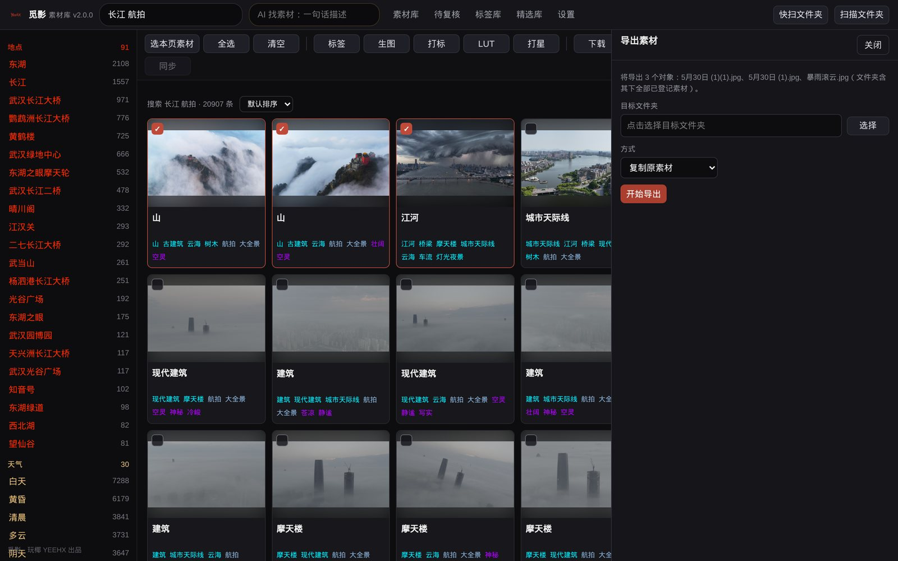
复制原素材（进剪辑）· 导出图片/帧（每条视频取封面帧存图——给 AI 喂真实底图的神器，20 张原图不用开剪辑软件）· 清单（JSON / CSV / TXT / Premiere / FCPXML）。导出永远是复制，原素材原地不动。真实成果：
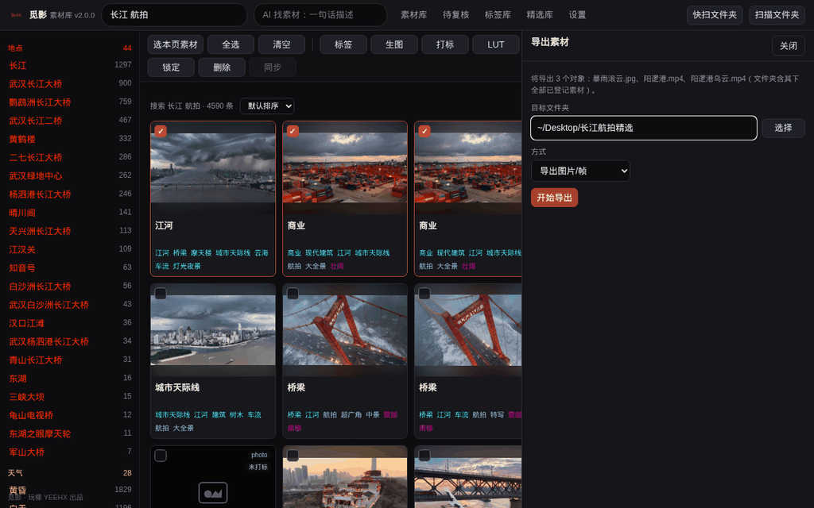
不连模型：扫描 / 浏览 / LUT / 手动标签 / 按词搜索全可用。连上才有：自动打标 + AI 找素材。设置 → AI 模型，两张卡片二选一：
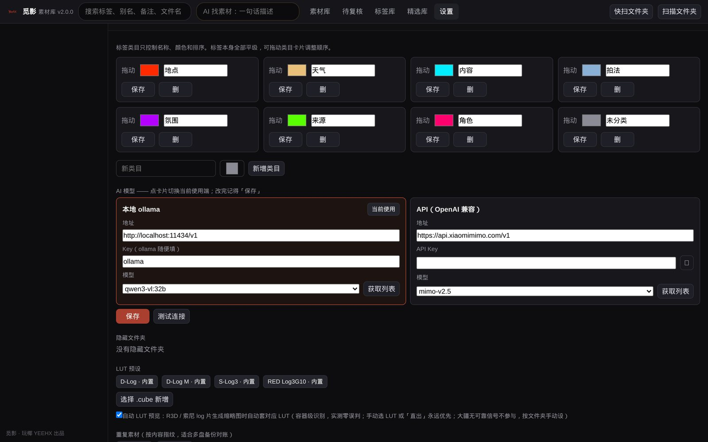
路线 A · 本地 Ollama（完全免费，全程不出网）：
1. ollama.com 下载对应系统版本并启动（mac 菜单栏 / Windows 托盘出现小羊驼图标）→ 2. 拉视觉模型：推荐 Qwen3.6 A3B（MoE 只激活小部分参数，快且稳）——在 ollama.com/library 搜 qwen3.6 选 A3B 视觉版，把页面的 ollama pull ... 命令粘进终端执行 → 3. 觅影 设置 → 本地卡片：地址默认不改，「获取列表」选模型 → 测试连接 → 保存。
路线 B · 小米 MiMo API（速度王者，12 路并发打标）：
1. 打开 platform.xiaomimimo.com，小米账号登录 → 2. 控制台创建 API Key 并复制保存（官方不定期有免费 Token 激励计划，以官网为准）→ 3. 觅影 设置 → API 卡片：地址 https://api.xiaomimimo.com/v1，粘 Key，模型 mimo-v2.5 → 测试连接 → 保存。
app/out/model_settings.json。连好模型后，"让 AI 认识素材"的完整流程：空占位 → 全选 → 生图（先看得见）→ 打标（AI 写标签写描述，队列自动跑）→ 点开任意素材看 AI 描述和标签。生图是为了看得见，打标是为了搜得到、Agent 读得懂（已打过的不重打）：
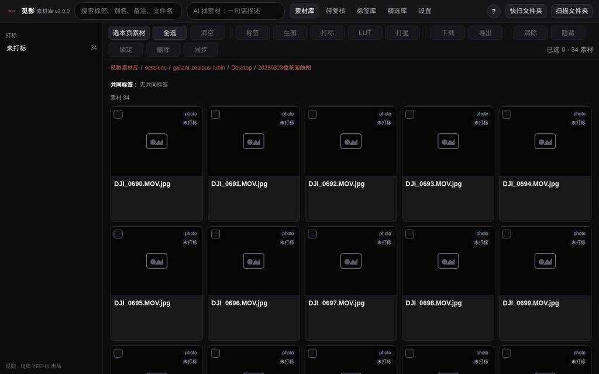
先说清楚：这不是 AI 拿不准。AI 已经给每段素材写好完整描述和标签；「待复核」是标签库的准入关——AI 提出的新词（一个大库能提几千个）你点「同意加入」才收录为正式标签，标签库才不会越用越乱。全部拒绝也不影响搜索：AI 描述已进全文搜索，这些词照样能搜到素材；正式标签的价值是侧栏筛选、统一管理、挂参考图。所以没有心理负担：留下你会用的，其余放心拒绝。标签库里可拖拽换类目、拖到另一个标签上合并、看 AI 整理建议。
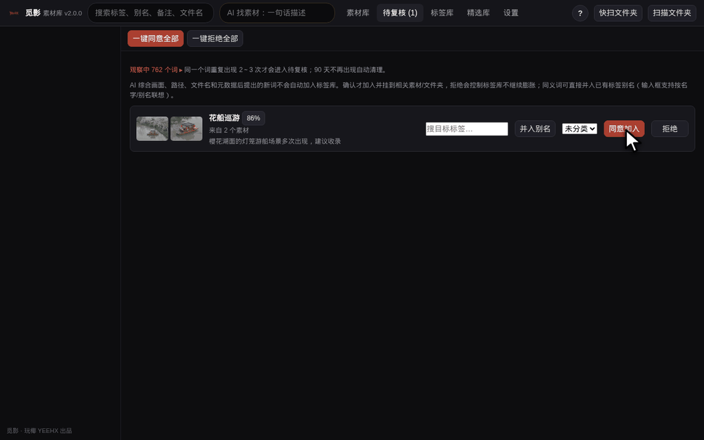
手动挂标签：选中素材 → 工具栏「标签」→ 点选 → 确定：
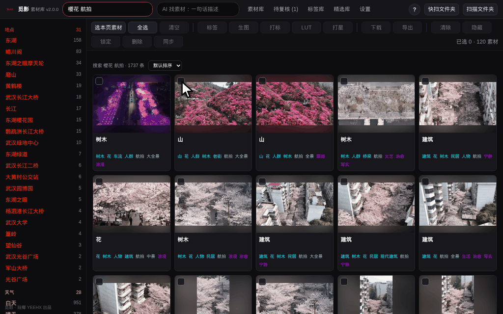
选中那块盘或文件夹，点
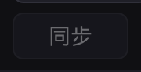
：新增入库并打标、已打标的不重打、消失的清记录，放心反复点。文件改名 / 移动不丢标签——觅影认内容指纹，扫到新位置自动接管。满硬盘 log 灰片没法选片？选中素材或整个文件夹 → 工具栏「LUT」→ 选还原预设 → 确认，缩略图批量渲染回正常色彩——只改预览，绝不动原片。设置页开「自动 LUT」后，扫描时自动识别 log 素材直接套好。
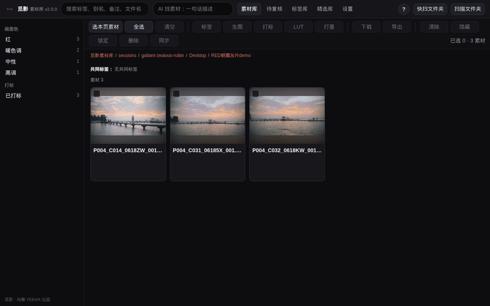
app/luts/README.md。觅影自带 MCP 接口，接进任何支持 MCP 的 AI 助手后，直接对 AI 说：「帮我找五段金色长江的航拍，先发截图我看看」→「第 2、4 段可以，原片发我」。搜索、预览、原片、导出底图全自动——这是摄影师 AI 工作流里筛选真实素材的那一环。接入方法见 app/Hermes接入觅影.md。
双击启动没反应 / 无法打开 —— 右键 → 打开 → 打开（见①）；再不行看 app/out/app.log 最后几行，通常最后一行就写着原因。
顶上黄条"还没连上 AI 模型" —— 不影响使用；要 AI 打标就照⑦连模型，不想看点「不再提示」。
搜不到某段素材 —— 确认那块盘扫过 → 换左侧标签筛选 → 还没打标就选中它点「打标」。
硬盘显示离线 —— 盘没插，插上即恢复；离线期间记录绝不会被误删。
R3D 素材没有缩略图 —— 需安装 RED 官方 REDCINE-X PRO（含 REDline），装好后选中点「生图」。
灰片套了 LUT 还是灰的 —— 检查官方 .cube 是否已导入（设置 → LUT 预设）；缺文件时觅影不造假色，宁可保持灰片。
几十张连号照片只显示一条素材 —— 延时序列折叠：同前缀连号图 ≥ 30 张自动合并为一条「延时」素材（取中间帧做封面）；阈值在 app/config.yaml 的 timelapse_min_frames。
手机上能用吗 —— 能：设置 → 手机/局域网访问，开启后用带口令地址在手机浏览器打开（同一 WiFi）。